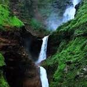
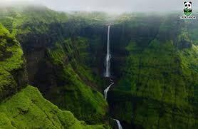
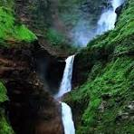
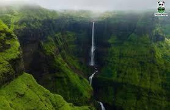

About Kalu Waterfall
Kalu Waterfall, located near Malshej Ghat in Maharashtra, is one of the highest and most scenic waterfalls in the region. Surrounded by lush green valleys and misty mountains, it comes alive during the monsoon season, attracting trekkers and nature lovers.
Why Visit?
- Witness a majestic waterfall over 1,200 feet tall, especially during monsoons.
- Perfect for trekking, photography, and adventure seekers.
- Experience the serenity of Sahyadri hills and scenic valleys.
- Nearby attractions include Malshej Ghat, Harishchandragad Fort, and Pimpalgaon Joga Dam.
Location & Travel
Nearest Railway Station: Kalyan (~85 km away)
Nearest Airport: Pune Airport (~120 km) or Mumbai Airport (~150 km)
Well connected by road via Malshej Ghat; popular for road trips from Mumbai & Pune.
Visiting Details
- Best Time to Visit: June to September (monsoon season).
- Ideal Duration: 1 day trip or weekend getaway.
- Entry Fee: No entry charges.
- Activity Tip: Trekking shoes and rain gear are highly recommended.
Average Travel Expense
A day trip to Kalu Waterfall from Mumbai/Pune may cost around:
- Budget: ₹800 – ₹1,500 (local transport & food)
- Group Road Trip: ₹2,000 – ₹3,500 per person (fuel, meals, guide)